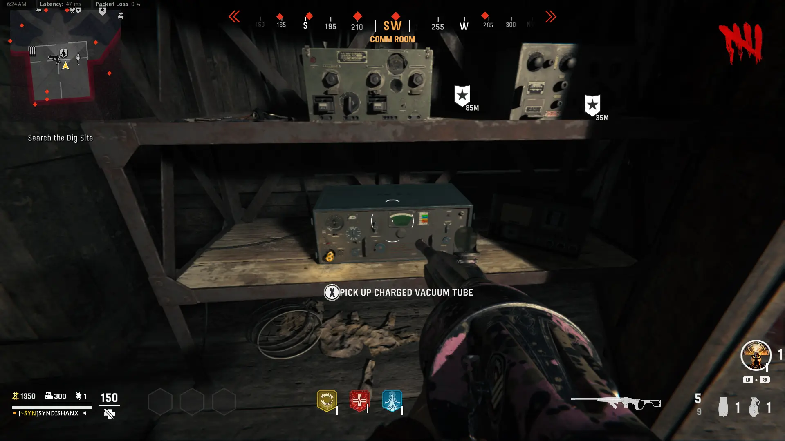
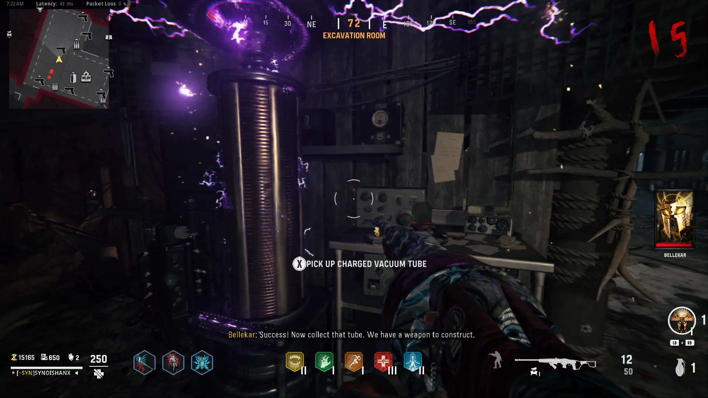
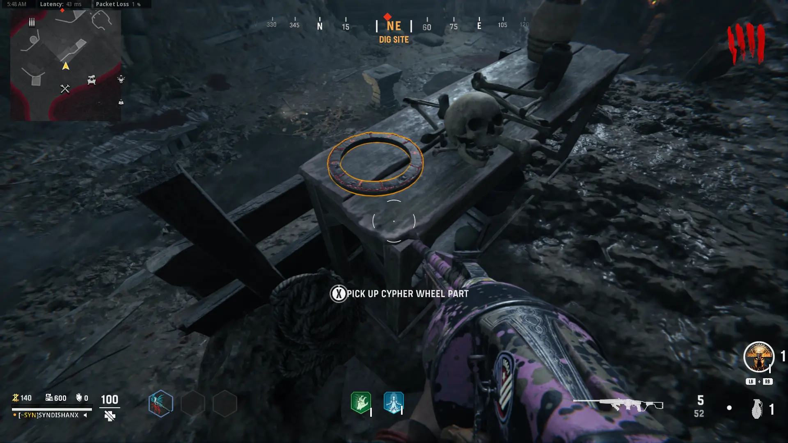
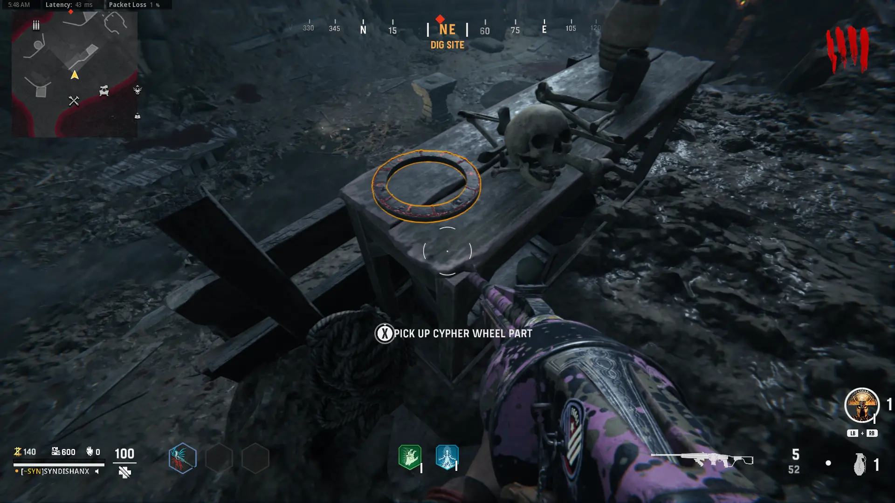
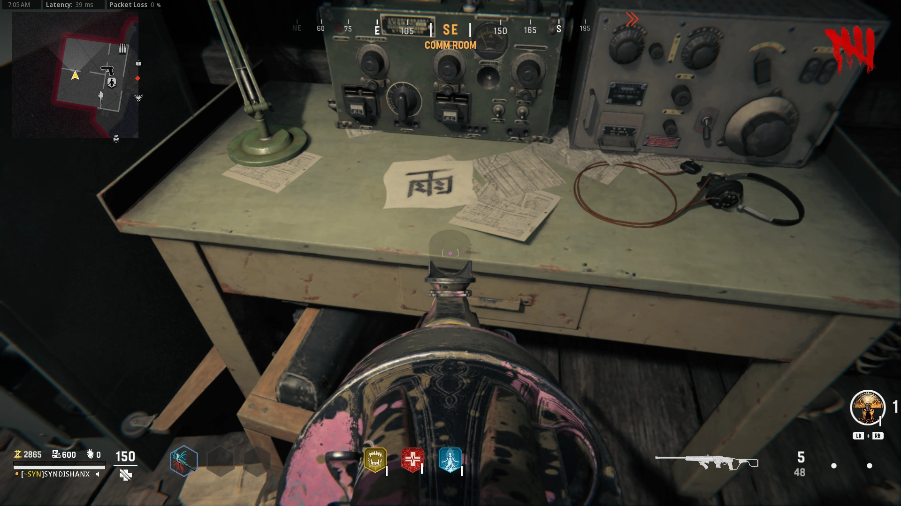
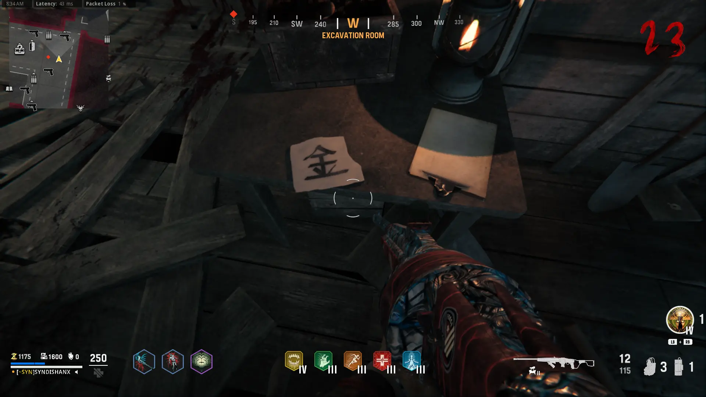
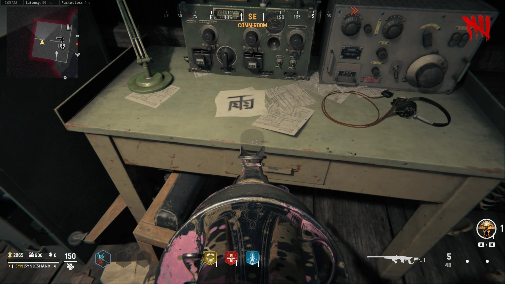
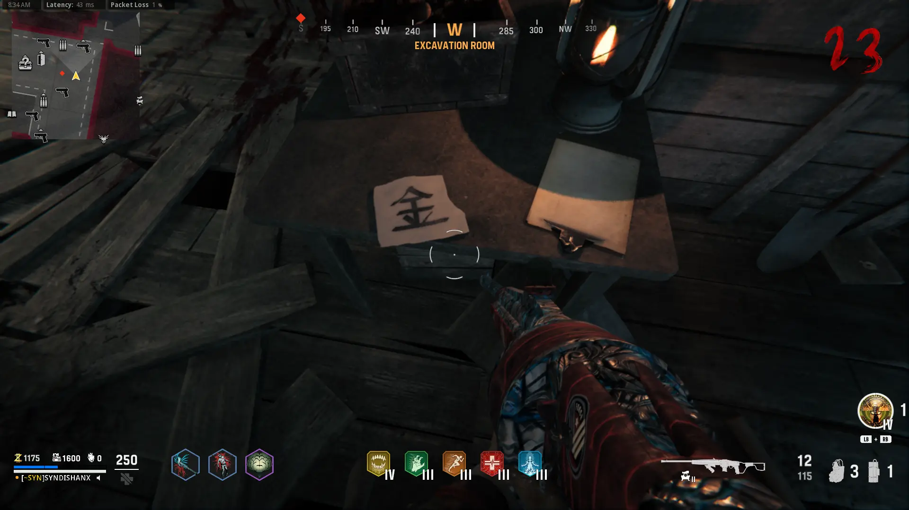

Free Wunderwaffe DG-2
Go to the Fishing Hut and grab the Weapon Barrel on the Shelf by the Door

Go to Comm Room Exterior and Place the Weapon Barrel on the Radio

Complete the Current Round
Protect the Radio from the Zombies, Boom Schreier, and Sturmkrieger
Pick up the Weapon Barrel from the Radio
Grab the Vacuum Tube in the Close Right Corner of the Back Left Room in the Comm Room

Grab the Electrical Fuse from inside the Comm Room

Go to Storage Hut and Activate the Trap, Repair it using the Fuse, and Let the Trap Get 8-10? kills to Charge the Vacuum Tube

Wait until Round 15, and have Zaballa Attack you near the Machine in the Hub Hut, then grab the Charged Vacuum Tube

Build the Wunderwaffe DG-2 in the Storage Hut
Main Quest
Grab the Cipher Wheel Pieces
-Dormitory -Dig Site -Doctor's Quarters
 

Have 2 Boom Schreier's Explode near the Monolith to Uncover it
Throw any Fire Grenade at the Encrytion Key to Reveal the other Half
Insert the Cipher Wheel Parts
Locate all 3 Symbols on the Map and use the Encrytion Key to Decipher them
-Dig Site -Comm Room -Dee Snuts
 
Once you have all 3 Deciphered Symbols, input them into the Monolith (Align the Symbols from Top to Bottom)
Start the Cermony, the Blue Zombies need to be killed using the Wunderwaffe